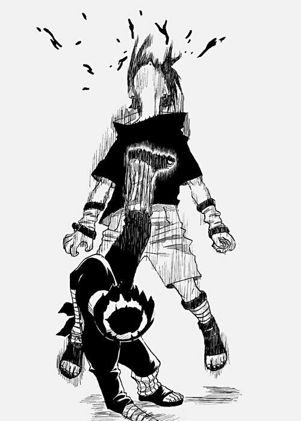

Melhor Personagem de Naruto, GOAT, AKA ROCK LEE
Maiores feitos de ROCK LEE:
- Mesmo sendo incapaz de usar ninjutsu, é um ninja de alto nivel especializado em taijutsu.

- Ganhou em uma luta corpo a corpo contra Sasuke Uchiha, um dos ninjas mais promissores de sua geração.

- Abriu os 8 portões que controlam os limites do chakra, mesmo ainda não tendo se formado.

- Quase matou um Jinchuuriki estando ainda no exame chunnin.
- Desceu a porrada em Kimimaro portador de uma Kekkei Genkai extremamente poderosa, apesar de não conseguir a vitoria.

- É aprendiz de Might Guy, o ninja mais forte, segundo Madara Uchica, Jinchuuriki da Dez Caldas.


Ele é, com toda certeza, o maior exemplo de resiliencia e dedicação que ja vi em uma obra de ficção!